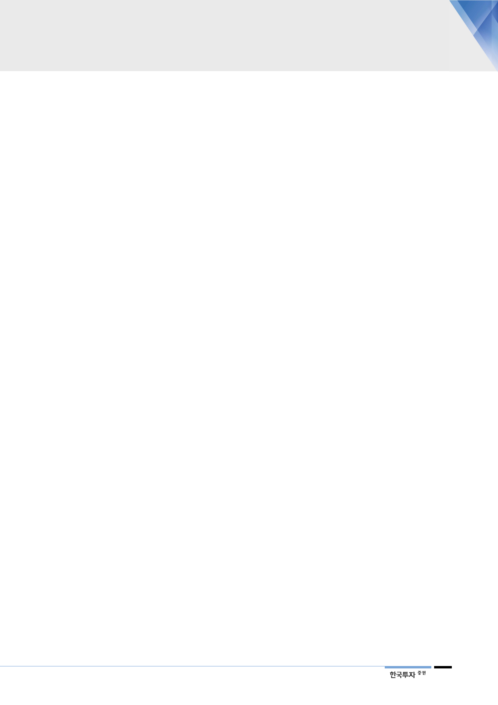

기업개요 및 용어해설
■ 기업개요
SKC코오롱PI는 폴리이미드(PI) 필름 생산 업체로 SKC와 코오롱인더스트리가 각각 50%씩 출자해 2008년 설립되었다.
PI필름을 FPCB용 소재 생산업체, 방열시트 생산업체 및 산업용 PI필름 수요업체에 공급한다. PI필름은 슈퍼 엔지니어링
플라스틱으로, 상용화된 플라스틱 필름 중 내열성, 치수안정성, 절연성, 내화학성 측면에서 뛰어나다. 주요 어플리케이션
이 FPCB에서 인조 그라파이트(흑연) 시트로 확대되면서 시장이 성장하고 있다. 2017년 기준 매출액 비중은 FPCB향
50%, 방열시트향 35%, 일반산업향 15%으로 구성되어 있다.
■ 용어해설
폴리이미드(Polyimide): 고분자 물질로서 방향족 무수물 단량체(PMDA, BPDA 등)와 방향족 디아민 단량체(ODA,
p-PDA 등)를 중합해 만들어지는 엔지니어링 플라스틱
PI필름: 액체 상태의 폴리이미드 바니시(Varnish)를 열경화 등의 필름 제조 공법을 사용해 필름화한 제품
FPCB(Flexible Printed Circuit Board): 유연한 인쇄 회로 기판(PCB)으로 절연체인 PI필름 위에 전기 전도성을
가진 동박으로 회로를 형성해 만든 부품. 인쇄 회로 기판의 경박 단소화, 유연성을 목적으로 만들어짐
방열시트: 전가지지의 발열 문제를 해결하기 위해 부착하는 시트. 열전도도가 높아 내부 열을 분산하고 감소시키
는데 사용. IT기기에 적용되는 방열소재는 금속(구리, 알루미늄), 방열 기능 적용 실리콘, 천연 그라파이트(흑연)
시트, 인조 그라파이트 시트가 있으며 이 중 열전도성이 우수하고 가벼운 무게와 얇은 두께가 강점인 인조 그라파
이트 시트가 스마트폰 등 소형 IT제품에 많이 사용
FCCL(Flexible Copper Clad Laminate): FPCB의 주요 소재 중 하나로, 기재 필름인 PI필름에 동박(Copper foil)
을 붙여 만듦. 접착제(Adhesive)의 유무로 2층 FCCL과 3층 FCCL로 나뉘며, 2층 FCCL은 PI필름 자체에 접착성
이 있어 접착제가 필요없는 반면 3층 FCCL은 접착층이 별도로 필요함
커버레이(Coverlay): FCCL과 함께 FPCB의 주요 소재 중 하나로, 회로가 형성된 FCCL의 동박 층의 노출면을
보호함과 동시에 절연 역할을 수행함. PI필름이 주요 소재임
PMDA(Pyromellitic Dianhydride): 폴리이미드 중합에 사용되는 대표적인 화학제품으로 ODA(Oxydianiline)과 합
성해 폴리이미드를 제조
BPDA(biphenyl-tetracarboxylic acid dianhydride): 폴리이미드 중합에 사용되는 방향족 무수물 중 하나로, 열
가소성 폴리이미드(TPI; Thermoplastic polyimide) 생산에 주로 사용된다.
PI바니시: 액체 상태의 폴리이미드 중합물로, PI필름으로 제조하기 전 상태의 소재임. 현재 적용 어플리케이션은
플렉서블 OLED패널 기판, 2차전지 등임
COF(Chip on film)용 PI필름: 디스플레이 구동 칩(DDIC; Display Driver IC)을 실장하는데 사용되는 PI필름으로,
유연한 필름 위에 칩을 실장(Chip on film)함으로서 스마트폰 및 TV의 베젤(bezel) 최소화를 가능하게 함
21